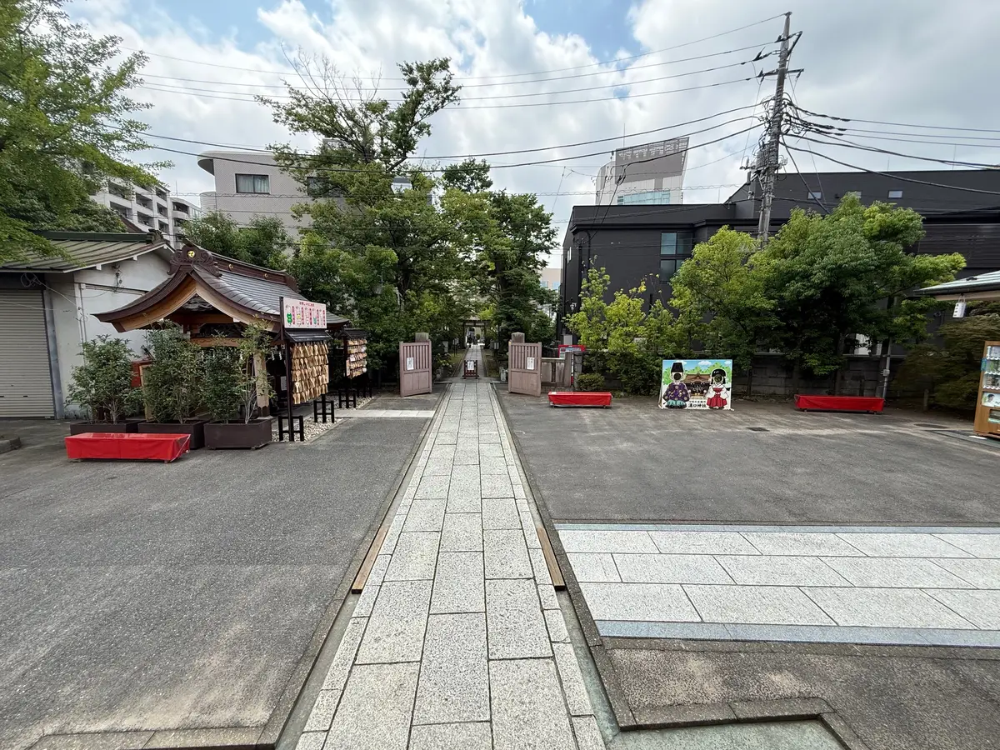

入口
いりぐち
入口から順路にそって、境内を歩くようにご案内します。地図の番号を押すとその場所へ、各場所の「次へ進む」で順路どおりに進めます。

境内の正面に立つ大鳥居。一礼してからくぐります。
次へ進む: 3 松尾大明神 →
参道の入口近くにある石碑。詳しい由緒は確認ののちご案内いたします。
次へ進む: 4 水神宮 →
参道の西側にある石の祠。詳しい由緒は確認ののちご案内いたします。
次へ進む: 5 参道掲示板 →
年中行事やお参りの作法をご案内する掲示板です。


参道の両脇で神社をお守りしています。(写真は近日掲載いたします)
次へ進む: 7 百度石・神橋 →





ご参拝の記念にどうぞ。
次へ進む: 15 社務所 →
御祈祷の受付、お守り・御札の授与、お焚き上げなどの窓口です。


稲荷社から広場のほうへ戻ります。
次へ進む: 20 垂乳根・歯固め塚 →


社殿の東側を通って進みます。
次へ進む: 23 交通安全横断幕 →
交通安全祈願のご案内です。
次へ進む: 24 駐車場 →


本殿前の広場へ戻ります。
次へ進む: 27 願掛け夫婦銀杏 →
願掛けの銀杏として親しまれています。ご参拝ありがとうございました。
↑ 境内図へ戻る